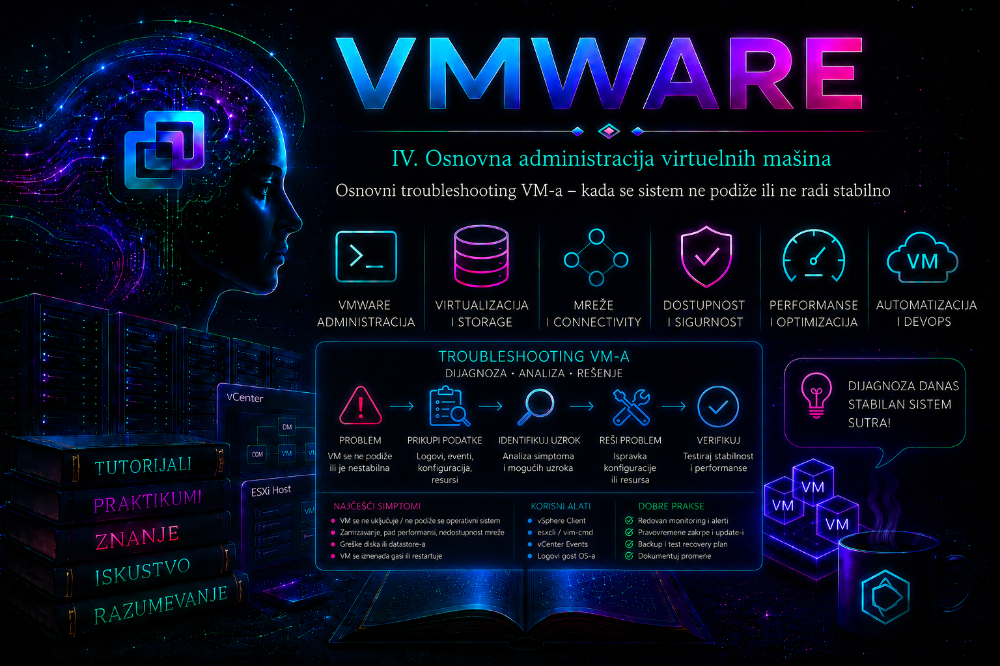

VMware

Troubleshooting virtuelne mašine predstavlja sistematično pronalaženje uzroka problema na jednom od nekoliko povezanih slojeva: ESXi hostu, datastore-u, virtuelnom hardveru, virtuelnoj mreži, operativnom sistemu gosta ili aplikaciji. Kada se VM ne pokreće, radi sporo, gubi mrežnu vezu ili prestane da odgovara, cilj administratora nije da što pre primeni nasumičnu promenu, već da utvrdi na kom sloju je problem nastao i prikupi dovoljno podataka pre intervencije.
Najvažnije pravilo jeste da se prvo proverava trenutno stanje, zatim događaji i logovi, a tek potom primenjuju korektivne mere. Restart, reset ili prisilno gašenje mogu privremeno ukloniti simptom, ali istovremeno mogu izbrisati važne tragove iz memorije, prekinuti aplikacione transakcije ili otežati naknadnu analizu uzroka.
Granice lekcije i verzijski okvir
Ova lekcija uvodi prvu trijažu pojedinačne virtuelne mašine u okruženju kojim upravljaju vCenter Server i ESXi 7.x ili 8.x. Nazivi pojedinih kartica u vSphere Client-u mogu se neznatno razlikovati između izdanja i build-ova, ali dijagnostički model ostaje isti. Funkcije kao što su vMotion, vSphere HA, distribuirani switch, napredni alarmi i istorijske performanse zavise od arhitekture, konfiguracije i licence; one nisu preduslov za osnovno prikupljanje dokaza. Dublja mrežna, storage i klasterska dijagnostika obrađuju se u kasnijim lekcijama 25, 30, 34, 37 i 38.
Komande u ESXi Shell-u podrazumevaju privremeno omogućen SSH ili lokalni ESXi Shell i nalog sa odgovarajućim administratorskim privilegijama. U produkciji pristup treba otvoriti samo za odobrenu intervenciju, evidentirati ga i po završetku vratiti u stanje propisano bezbednosnom politikom. PowerCLI primere izvršava administrator sa radne stanice na kojoj je instaliran aktuelni VMware PowerCLI, odnosno paket koji Broadcom dokumentacija i repozitorijum distribuiraju pod tim nazivom. Za čitanje inventara, događaja i metrika koristi se nalog sa read-only privilegijama kad god je dovoljan; state-changing komande zahtevaju posebno odobrenje.
Operativni model: simptom, dokaz, uzrok i korekcija
| Pojam | Pitanje administratora | Primer |
|---|---|---|
| Simptom | Šta je opaženo i od kada? | VM je uključena, ali HTTPS servis nije dostupan od 10:14. |
| Obim | Ko je još pogođen? | Jedna VM, sve VM na hostu, jedna port grupa ili ceo datastore. |
| Posledica | Koji je poslovni uticaj? | Interna aplikacija je nedostupna; baza i ostali servisi rade. |
| Neposredni uzrok | Koji tehnički događaj direktno proizvodi simptom? | Web servis nije pokrenut jer je filesystem popunjen. |
| Osnovni uzrok | Zašto je neposredni uzrok nastao? | Log rotation nije bila aktivna posle promene konfiguracije. |
| Zaobilazno rešenje | Kako bezbedno vraćamo uslugu dok traje analiza? | Kontrolisano oslobađanje prostora i pokretanje servisa. |
| Trajna mera | Kako sprečavamo ponavljanje? | Ispravka rotacije logova, alarm za kapacitet i vlasnik kontrole. |
Dobar incident zapis ne meša ove pojmove. „Restart VM-a” nije uzrok niti dokaz, već intervencija; „posle restarta radi” potvrđuje samo privremeni oporavak. Administrator zato formira proverljivu hipotezu, na primer: „VM ne odgovara zato što storage latencija blokira I/O”, a zatim traži istovremene dokaze u konzoli, metrikama, vmware.log, vmkernel.log i ponašanju drugih workload-a na istom datastore-u.
Razdvajanje simptoma od uzroka
Korisnik obično prijavljuje simptom:
- server nije dostupan
- aplikacija radi sporo
- VM se ne uključuje
- operativni sistem se ne podiže
- mreža povremeno nestaje
- VM je uključena, ali ne odgovara
Isti simptom može imati više različitih uzroka. Na primer, nedostupan server može biti posledica ugašene VM, neispravne mrežne konfiguracije, zaustavljenog servisa, problema sa DNS-om, punog diska unutar gosta ili gubitka veze između ESXi hosta i datastore-a. Zato se dijagnostika izvodi po slojevima.
Osnovni redosled dijagnostike
- Zabeležiti tačan simptom, vreme nastanka i poslednju poznatu promenu.
- Proveriti stanje VM-a, ESXi hosta i vCenter zadataka.
- Proveriti alarme, događaje i poruke o grešci.
- Proveriti dostupnost i slobodan prostor na datastore-u.
- Proveriti virtuelne diskove, snapshot-e i priključene uređaje.
- Proveriti port grupu, mrežni adapter, VLAN i IP konfiguraciju.
- Proveriti CPU, memoriju, storage latenciju i mrežne performanse.
- Proveriti VMware Tools i stanje operativnog sistema gosta.
- Proveriti aplikacione servise i logove unutar gosta.
- Tek nakon prikupljanja podataka primeniti odgovarajuću korektivnu meru.
Prikupljanje osnovnih informacija
Pre promene konfiguracije treba zabeležiti:
- ime virtuelne mašine
- ESXi host na kojem trenutno radi
- datastore na kojem se nalaze njeni fajlovi
- port grupu i mrežu na koju je povezana
- trenutno power stanje
- broj vCPU i količinu RAM memorije
- postojanje snapshot-a
- status VMware Toolsa
- tačno vreme pojave problema
- poslednje izmene, nadogradnje ili migracije
Tačno vreme problema posebno je važno jer omogućava povezivanje prijavljenog simptoma sa zapisima u vCenter događajima, ESXi logovima i logovima operativnog sistema.
Provera kroz vSphere Client
Pre otvaranja ESXi Shell-a treba proveriti osnovne podatke u vSphere Client-u:
- Summary – power stanje, host, datastore, IP adresa i VMware Tools
- Monitor > Tasks and Events – neuspešni zadaci i promene konfiguracije
- Monitor > Issues and Alarms – aktivni alarmi
- Monitor > Performance – CPU, memorija, disk i mreža
- Snapshots – broj i starost snapshot-a
- Edit Settings – stanje diskova, mrežnih adaptera i priključenih uređaja
Poruku o grešci treba sačuvati u celosti. Kratak deo poruke često nije dovoljan za razlikovanje problema sa resursima, zaključanim fajlovima, storage-om ili konfiguracijom VM-a.
Provera VM inventara na ESXi hostu
Nakon SSH prijave na ESXi host, sve registrovane virtuelne mašine mogu se prikazati komandom:
vim-cmd vmsvc/getallvms
Primer:
Vmid Name File Guest OS
12 WebServer01 [Datastore01] WebServer01/WebServer01.vmx ubuntu64Guest
18 DBServer01 [Datastore02] DBServer01/DBServer01.vmx rhel9_64Guest
Vrednost u koloni Vmid koristi se u drugim vim-cmd komandama. Ona nije isto što i World ID procesa koji se koristi za prinudno zaustavljanje VM-a.
Detaljna konfiguracija određene VM može se prikazati komandom:
vim-cmd vmsvc/get.config 12
Osnovne informacije o gostujućem sistemu:
vim-cmd vmsvc/get.guest 12
Operativno stanje i informacije o izvršavanju:
vim-cmd vmsvc/get.runtime 12
Ove komande pomažu da se potvrdi putanja do VMX fajla, trenutno stanje, host na kojem je VM registrovana i informacije koje ESXi dobija preko VMware Toolsa.
Provera power stanja
Stanje određene virtuelne mašine proverava se komandom:
vim-cmd vmsvc/power.getstate 12
Mogući odgovori uključuju:
Powered on
Powered off
Suspended
Ako vSphere Client prikazuje drugačije stanje od ESXi hosta, moguće je da postoji problem u komunikaciji između hosta i vCenter Servera. U tom slučaju treba proveriti hostd.log i vpxa.log.
Provera da li VM čeka odgovor administratora
Virtuelna mašina ponekad ne nastavlja pokretanje zato što čeka odgovor na pitanje, na primer nakon promene lokacije njenih fajlova, kopiranja VM-a ili problema sa virtuelnim diskom.
Provera pitanja:
vim-cmd vmsvc/message 12
Ako postoji aktivno pitanje, komanda prikazuje ID pitanja i ponuđene odgovore. Odgovor se šalje navođenjem VMID-a, ID-a pitanja i ID-a izabranog odgovora:
vim-cmd vmsvc/message 12 <question_id> <answer_id>
Odgovor ne treba birati napamet. Na primer, pogrešan odgovor na pitanje da li je VM kopirana ili premeštena može uticati na generisanje novih identifikatora i MAC adresa.
VM se ne može uključiti
Ako Power On operacija ne uspe, najčešći uzroci su:
- nedovoljno raspoložive memorije na hostu
- neispunjena memorijska ili CPU rezervacija
- popunjen ili nedostupan datastore
- zaključani VMX ili VMDK fajlovi
- neispravan snapshot lanac
- nedostajući virtuelni disk
- neispravna putanja do ISO fajla
- nepodržana ili nekompatibilna konfiguracija uređaja
- neodgovoreno pitanje virtuelne mašine
- oštećen ili neispravno izmenjen VMX fajl
Pokušaj pokretanja iz komandne linije:
vim-cmd vmsvc/power.on 12
Odmah nakon neuspeha treba pregledati poslednje zapise u logu virtuelne mašine:
tail -n 100 /vmfs/volumes/Datastore01/WebServer01/vmware.log
Za filtriranje relevantnih poruka:
grep -Ei "error|failed|cannot|lock|disk|snapshot" \
/vmfs/volumes/Datastore01/WebServer01/vmware.log | tail -n 50
Pretraga služi za brzo izdvajanje važnih redova, ali konačan zaključak treba doneti tek nakon pregleda konteksta oko pronađene poruke.
VM je uključena, ali ne odgovara
Najpre treba utvrditi da li je problem ograničen na mrežu ili je zamrznut ceo gostujući sistem:
- otvoriti Remote Console
- proveriti da li konzola reaguje na tastaturu
- proveriti status VMware Toolsa
- proveriti da li VM odgovara na ping
- proveriti da li je dostupan SSH ili RDP
- proveriti CPU i storage latenciju
Ako konzola radi, ali mrežni pristup ne radi, verovatniji uzrok je u virtuelnoj mreži, IP konfiguraciji, firewall-u ili mrežnom servisu unutar gosta. Ako ne reaguju ni konzola ni VMware Tools, treba proveriti potrošnju resursa i stanje VM procesa.
Redosled bezbednog restartovanja
Prvo treba pokušati uredno restartovanje gostujućeg operativnog sistema:
vim-cmd vmsvc/power.reboot 12
Ova komanda zavisi od ispravnog rada VMware Toolsa. Ako gost ne odgovara, komanda može ostati bez efekta.
Sledeća mogućnost je virtuelni reset:
vim-cmd vmsvc/power.reset 12
Reset odgovara pritisku fizičkog reset dugmeta. Operativni sistem ne dobija priliku da uredno zatvori servise i filesystem, pa se koristi samo kada uredan restart nije moguć.
Prinudno isključivanje:
vim-cmd vmsvc/power.off 12
Power Off odgovara prekidu napajanja fizičkog servera i predstavlja poslednju standardnu opciju. Pre njegove primene treba proceniti rizik za baze podataka, aplikacione transakcije i filesystem.
Pronalaženje VM procesa
Ako standardne power komande ne rade, aktivni VM procesi mogu se prikazati komandom:
esxcli vm process list
Primer skraćenog izlaza:
WebServer01
World ID: 345678
Process ID: 0
VMX Cartel ID: 345677
UUID: 56 4d ...
Display Name: WebServer01
Config File: /vmfs/volumes/Datastore01/WebServer01/WebServer01.vmx
Za prinudno zaustavljanje koristi se World ID, a ne VMID iz komande vim-cmd vmsvc/getallvms.
Postoje tri nivoa zaustavljanja:
esxcli vm process kill --type=soft --world-id=345678
esxcli vm process kill --type=hard --world-id=345678
esxcli vm process kill --type=force --world-id=345678
- soft – prvo pokušava kontrolisano zaustavljanje procesa
- hard – prinudno prekida VMX proces kada soft ne uspe
- force – najagresivniji nivo i koristi se samo kao poslednja mogućnost
Nakon svakog koraka treba ponovo pokrenuti:
esxcli vm process list
i proveriti da li je proces nestao. Ne treba odmah prelaziti na force ako blaža metoda još nije proverena.
Provera slobodnog prostora na datastore-u
Datastore koji je ostao bez slobodnog prostora može sprečiti pokretanje VM-a, rast snapshot-a, kreiranje swap fajla ili normalan rad gostujućeg sistema.
Pregled montiranih filesystem-a:
esxcli storage filesystem list
Jednostavniji pregled zauzeća:
df -h
Potrebno je proveriti:
- ukupan kapacitet
- raspoloživ prostor
- da li je datastore montiran
- da li VMFS volumen ima očekivanu putanju
Pregled sadržaja direktorijuma VM-a:
ls -lah /vmfs/volumes/Datastore01/WebServer01/
Veliki fajlovi mogu se izdvojiti komandom:
du -h /vmfs/volumes/Datastore01/WebServer01/* | sort -h
Posebnu pažnju treba obratiti na:
*-delta.vmdki*-sesparse.vmdk– snapshot podatke*.vswp– VM swap fajlovevmware.logi rotirane logove- stare ISO slike
- privremene ili napuštene VMDK fajlove
Fajlove virtuelne mašine ne treba ručno brisati samo na osnovu njihovog imena. Pre brisanja mora se utvrditi da li pripadaju aktivnoj konfiguraciji ili snapshot lancu.
Provera snapshot-a
Prikaz snapshot stabla određene VM:
vim-cmd vmsvc/snapshot.get 12
Ako komanda prijavi da snapshot ne postoji, ali u direktorijumu postoje delta ili sesparse fajlovi, moguće je da postoji neusaglašenost snapshot metapodataka ili potreba za konsolidacijom.
PowerCLI pregled:
Get-Snapshot -VM "WebServer01" |
Select-Object VM, Name, Created, SizeGB
Pregled starijih snapshot-a, na primer starijih od sedam dana:
Get-VM |
Get-Snapshot |
Where-Object {$_.Created -lt (Get-Date).AddDays(-7)} |
Select-Object VM, Name, Created, SizeGB
Postojanje snapshot-a samo po sebi ne dokazuje da je on uzrok problema. Potrebno je proveriti njegovu veličinu, starost, storage latenciju i raspoloživi prostor pre konsolidacije.
Provera zaključanih VM fajlova
Kada VM ne može da se uključi zbog poruke da je fajl zaključan, prvo treba utvrditi koji ESXi host poseduje zaključavanje. Zaključavanje je normalno dok VM radi, ali postaje problem ako je ostalo nakon pada hosta, prekida storage veze ili neuspele migracije.
Provera zaključavanja VMDK descriptor fajla:
vmkfstools -D /vmfs/volumes/Datastore01/WebServer01/WebServer01.vmdk
Za VMFS6 može biti korisna i komanda:
vmfsfilelockinfo -p \
/vmfs/volumes/Datastore01/WebServer01/WebServer01.vmdk
Proveriti treba i VMX fajl:
vmfsfilelockinfo -p \
/vmfs/volumes/Datastore01/WebServer01/WebServer01.vmx
Ako zaključavanje pripada hostu na kojem VM zaista radi, ono je očekivano. Ako pripada drugom hostu, treba proveriti da li je VM tamo ostala registrovana ili postoji zaostali VMX proces. Ne treba ručno uklanjati lock fajlove bez utvrđivanja vlasnika.
Provera virtuelnih diskova
Prikaz diskova vezanih za VM:
vim-cmd vmsvc/device.getdevices 12
U VMX konfiguraciji putanje do diskova mogu se pregledati komandom:
grep -i "fileName" \
/vmfs/volumes/Datastore01/WebServer01/WebServer01.vmx
VMDK descriptor može se bez izmene podataka proveriti komandom:
vmkfstools -e \
/vmfs/volumes/Datastore01/WebServer01/WebServer01.vmdk
Komanda proverava konzistentnost lanca virtuelnog diska. Ako prijavi problem u lancu, ne treba nasumično preimenovati ili menjati VMDK descriptor fajlove, već prvo napraviti kopiju relevantnih metapodataka i analizirati tačan nedostajući parent disk ili CID neusaglašenost.
Provera da li je VM pravilno registrovana
Ako se VM fajlovi nalaze na datastore-u, ali VM nije vidljiva u inventaru, može se ponovo registrovati pomoću VMX fajla:
vim-cmd solo/registervm \
/vmfs/volumes/Datastore01/WebServer01/WebServer01.vmx
Komanda vraća novi VMID. Pre registracije treba proveriti da ista VM već nije registrovana pod drugim imenom ili na drugom hostu.
Uklanjanje VM-a iz inventara, bez brisanja fajlova:
vim-cmd vmsvc/unregister 12
Ovu komandu ne treba mešati sa brisanjem VM-a sa diska. Unregister uklanja objekat iz inventara, dok VM fajlovi ostaju na datastore-u.
VM se veoma sporo podiže
Sporo podizanje može nastati zbog:
- velikog broja ili velikih snapshot-a
- visoke storage latencije
- CPU contention-a i visokog CPU Ready vremena
- memory ballooning-a ili host swapping-a
- sporog DNS odgovora
- nedostupnih mrežnih mount tačaka
- servisa koji čekaju timeout
- provere filesystem-a nakon nepravilnog gašenja
- problema sa drajverima ili VMware Tools servisom
Na Linux gostu vreme pokretanja prikazuje:
systemd-analyze
Servisi poređani prema vremenu pokretanja:
systemd-analyze blame
Kritični lanac servisa:
systemd-analyze critical-chain
Greške iz tekućeg boot procesa:
journalctl -b -p err
Greške iz prethodnog boot procesa:
journalctl -b -1 -p err
Na Windows gostu korisno je pregledati:
Event Viewer
Windows Logs
System
Application
Applications and Services Logs
Microsoft
Windows
Diagnostics-Performance
Operational
PowerShell prikaz novijih sistemskih grešaka:
Get-WinEvent -FilterHashtable @{
LogName='System'
Level=2
StartTime=(Get-Date).AddHours(-2)
} | Select-Object TimeCreated, Id, ProviderName, Message
Provera CPU performansi pomoću esxtop-a
Interaktivni alat za praćenje performansi ESXi hosta pokreće se komandom:
esxtop
Pritiskom na slovo c otvara se CPU prikaz. Najvažniji pokazatelji za VM su:
- %USED – procenat fizičkog CPU vremena koje VM koristi
- %RUN – vreme tokom kojeg je VM izvršavana
- %RDY – vreme tokom kojeg je vCPU čekao da dobije fizički CPU
- %CSTP – vreme tokom kojeg su vCPU niti čekale međusobnu sinhronizaciju
- %MLMTD – vreme tokom kojeg je VM bila ograničena CPU limitom
Povišen %RDY ukazuje da vCPU čeka fizički procesor. Uzrok može biti preopterećen host, prevelik broj vCPU dodeljen VM-u, CPU limit ili velika konsolidacija radnih opterećenja.
Povišen %CSTP može se javiti kod VM-a sa većim brojem vCPU kada hipervizor teže obezbeđuje potrebno vreme izvršavanja za sve virtuelne procesore. Dodavanje vCPU nije automatski rešenje za spor rad i može dodatno povećati čekanje.
Provera memorije pomoću esxtop-a
U alatu esxtop pritisnuti slovo:
m
Važni pokazatelji uključuju:
- MEMSZ – konfigurisana memorija VM-a
- GRANT – memorija koju je ESXi dodelio VM-u
- ACTV – procena aktivno korišćene memorije
- MCTLSZ – memorija povraćena ballooning mehanizmom
- SWCUR – trenutna količina host swap memorije
- SWR/s i SWW/s – čitanje i pisanje host swap podataka
Ballooning nije nužno kvar; to je mehanizam kojim ESXi pokušava da povrati memoriju preko VMware Tools drajvera. Međutim, trajno visok ballooning, kompresija memorije ili host swapping ukazuju na memorijski pritisak. Aktivno swap pisanje i čitanje često uzrokuju primetno usporenje VM-a.
Provera storage performansi pomoću esxtop-a
U esxtop alatu koriste se sledeći prikazi:
d # storage adapter
u # storage device
v # virtual disk
Najvažnije vrednosti su:
- DAVG/cmd – prosečno vreme obrade komande na storage uređaju
- KAVG/cmd – vreme zadržavanja komande u ESXi kernelu
- GAVG/cmd – ukupna latencija koju vidi gost
- QAVG/cmd – vreme čekanja u redu
- CMDS/s – broj I/O komandi u sekundi
- READS/s i WRITES/s – broj čitanja i pisanja
Odnos između vrednosti može pomoći u lociranju problema:
- visok DAVG obično usmerava pažnju na storage uređaj, SAN, NAS ili putanju do storage-a
- visok KAVG ukazuje na čekanje unutar ESXi storage sloja
- visok GAVG potvrđuje da gostujući sistem oseća veliku ukupnu latenciju
Vrednosti treba posmatrati tokom dovoljno dugog intervala i uporediti ih sa uobičajenim stanjem konkretnog storage sistema. Jedan kratkotrajan skok ne mora predstavljati trajni problem.
Provera mreže pomoću esxtop-a
U alatu esxtop pritisnuti:
n
Važni pokazatelji uključuju:
- MbTX/s – odlazni saobraćaj
- MbRX/s – dolazni saobraćaj
- %DRPTX – procenat odbačenih odlaznih paketa
- %DRPRX – procenat odbačenih dolaznih paketa
Kontinuirano odbacivanje paketa može ukazivati na zagušenje, problem sa fizičkim adapterom, nepravilno podešene queue vrednosti ili preopterećenu mrežnu putanju. Analizu treba povezati sa brojačima fizičkog switcha i statistikama unutar gosta.
Batch prikupljanje esxtop podataka
Za naknadnu analizu može se koristiti batch režim:
esxtop -b -d 5 -n 60 > /tmp/esxtop.csv
Opcije znače:
-b– batch režim bez interaktivnog prikaza-d 5– interval od pet sekundi-n 60– šezdeset uzoraka
U ovom primeru podaci se prikupljaju približno pet minuta. Treba voditi računa o raspoloživom prostoru u direktorijumu u koji se izlaz upisuje.
Provera virtuelne mrežne kartice
Na nivou VM-a treba proveriti:
- da li je adapter označen kao Connected
- da li je uključena opcija Connect at power on
- da li je izabrana odgovarajuća port grupa
- da li port grupa koristi očekivani VLAN ID
- da li port grupa postoji na ciljnom ESXi hostu
- da li je MAC adresa očekivana
- da li gostujući sistem vidi mrežni adapter
PowerCLI pregled mrežnih adaptera:
Get-VM "WebServer01" |
Get-NetworkAdapter |
Select-Object Name, Type, NetworkName, MacAddress, ConnectionState
Pregled VMkernel adaptera na hostu:
esxcli network ip interface list
Pregled fizičkih mrežnih adaptera:
esxcli network nic list
Detalji određenog fizičkog adaptera:
esxcli network nic get -n vmnic0
Statistika adaptera:
esxcli network nic stats get -n vmnic0
Potrebno je proveriti link stanje, brzinu, duplex i brojače odbačenih ili pogrešnih paketa.
Testiranje VMkernel mreže
Običan ping sa ESXi hosta koristi podrazumevanu mrežnu putanju. Za testiranje određene VMkernel mreže koristi se vmkping.
Osnovni test:
vmkping 192.168.10.20
Test korišćenjem određenog TCP/IP stacka, na primer vMotion stacka:
vmkping ++netstack=vmotion 192.168.20.12
Test jumbo frame konfiguracije:
vmkping -I vmk1 -d -s 8972 192.168.20.12
Opcija -d zabranjuje fragmentaciju, a veličina paketa mora odgovarati MTU konfiguraciji cele putanje. Jumbo frame test ima smisla samo ako su VMkernel adapter, vSwitch, fizički adapteri i fizički switch dosledno podešeni.
Mrežna dijagnostika unutar Linux gosta
Pregled interfejsa i IP adresa:
ip -br address
Pregled ruta:
ip route
Provera link stanja:
ip link show
Provera očekivane putanje do odredišta:
ip route get 8.8.8.8
Test lokalnog gateway-a:
ping -c 4 192.168.10.1
Test IP konekcije van lokalne mreže:
ping -c 4 8.8.8.8
Test DNS rezolucije:
getent hosts example.com
Ako je dostupna komanda dig:
dig example.com
dig @192.168.10.10 example.com
Praćenje putanje:
tracepath 8.8.8.8
Pregled otvorenih portova:
ss -tulpn
Test određenog TCP porta:
nc -vz 192.168.10.50 443
Ako ping prema IP adresi radi, ali pristup po imenu ne radi, pažnju treba usmeriti na DNS. Ako ni gateway nije dostupan, proveravaju se lokalna IP konfiguracija, maska, VLAN, port grupa i firewall.
Mrežna dijagnostika unutar Windows gosta
Pregled konfiguracije:
ipconfig /all
Pregled ruta:
route print
Test gateway-a:
ping 192.168.10.1
Test DNS rezolucije:
nslookup example.com
Praćenje putanje:
tracert 8.8.8.8
PowerShell test određenog porta:
Test-NetConnection 192.168.10.50 -Port 443
Detaljan prikaz mrežnih adaptera:
Get-NetAdapter |
Format-Table Name, Status, LinkSpeed, MacAddress
Pregled IP konfiguracije:
Get-NetIPConfiguration
Provera VMware Toolsa
VMware Tools omogućavaju vCenter Serveru da dobije informacije o gostu, izvrši uredan shutdown, prati IP adresu i koristi dodatne integracione funkcije.
PowerCLI pregled:
Get-VM |
Select-Object Name,
PowerState,
@{N='ToolsStatus';E={$_.ExtensionData.Guest.ToolsStatus}},
@{N='ToolsVersionStatus';E={$_.ExtensionData.Guest.ToolsVersionStatus2}},
@{N='GuestState';E={$_.ExtensionData.Guest.GuestState}}
Na Linux sistemima sa open-vm-tools:
systemctl status vmtoolsd
Provera procesa:
ps -ef | grep [v]mtoolsd
Verzija alata:
vmware-toolbox-cmd -v
Na Windows sistemima:
Get-Service VMTools
Ako servis postoji, ali nije pokrenut:
Start-Service VMTools
Neaktivan VMware Tools servis ne znači automatski da je cela VM neispravna, ali ograničava vidljivost stanja gosta i onemogućava određene guest operacije.
Provera CPU opterećenja unutar gosta
Na Linux sistemu:
uptime
top
ps -eo pid,ppid,comm,%cpu,%mem --sort=-%cpu | head
Broj logičkih procesora:
nproc
lscpu
Na Windows sistemu:
Get-Process |
Sort-Object CPU -Descending |
Select-Object -First 10 Name, Id, CPU
Visoka potrošnja CPU-a unutar gosta razlikuje se od visokog CPU Ready vremena na ESXi hostu. U prvom slučaju aplikacija aktivno koristi procesor; u drugom VM želi da radi, ali čeka fizički CPU.
Provera memorije unutar gosta
Na Linux sistemu:
free -h
vmstat 1 10
ps -eo pid,comm,%mem,rss --sort=-rss | head
Kod komande vmstat posebno se posmatraju:
si– podaci učitani iz swap prostoraso– podaci upisani u swap prostorr– procesi koji čekaju CPUwa– CPU vreme provedeno čekajući I/O
Na Windows sistemu:
Get-CimInstance Win32_OperatingSystem |
Select-Object TotalVisibleMemorySize, FreePhysicalMemory
Najveći potrošači radne memorije:
Get-Process |
Sort-Object WorkingSet64 -Descending |
Select-Object -First 10 Name, Id,
@{N='WorkingSetMB';E={[math]::Round($_.WorkingSet64 / 1MB, 2)}}
Provera diskova unutar Linux gosta
Pregled zauzeća filesystem-a:
df -hT
Pregled inode zauzeća:
df -ih
Filesystem može imati slobodne gigabajte, ali ipak ne može kreirati nove fajlove ako su svi inode zapisi potrošeni.
Pregled blok uređaja:
lsblk -f
Najveći direktorijumi:
du -xhd1 / 2>/dev/null | sort -h
Greške diska i filesystem-a:
dmesg -T | grep -Ei "error|fail|I/O|filesystem|ext4|xfs"
Ako je instaliran iostat:
iostat -xz 1 10
Visok await i stalna iskorišćenost uređaja mogu ukazivati na storage problem ili veliko aplikaciono I/O opterećenje. Nalaz treba uporediti sa ESXi storage metrikama.
Provera diskova unutar Windows gosta
Pregled volumena:
Get-Volume |
Select-Object DriveLetter, FileSystemLabel,
Size, SizeRemaining, HealthStatus
Pregled fizičkih i virtuelnih diskova:
Get-Disk |
Select-Object Number, FriendlyName,
OperationalStatus, HealthStatus, Size
Provera filesystem-a bez automatske popravke:
chkdsk C: /scan
Popravka filesystem-a može zahtevati prekid rada i ne treba je pokretati bez procene uticaja i validnog backup-a.
Provera Linux servisa i logova
Neuspešni servisi:
systemctl --failed
Status konkretnog servisa:
systemctl status nginx
Log konkretnog servisa:
journalctl -u nginx --since "30 minutes ago"
Nove sistemske greške:
journalctl -p err --since "1 hour ago"
Kernel poruke:
journalctl -k --since "1 hour ago"
Ako je server dostupan, ali aplikacija nije, treba proveriti da li servis sluša na očekivanom portu:
ss -lntp
Provera Windows servisa i događaja
Zaustavljeni servisi podešeni na automatsko pokretanje:
Get-CimInstance Win32_Service |
Where-Object {
$_.StartMode -eq 'Auto' -and
$_.State -ne 'Running'
} |
Select-Object Name, DisplayName, State, StartMode
Sistemske greške u poslednjih sat vremena:
Get-WinEvent -FilterHashtable @{
LogName='System'
Level=2
StartTime=(Get-Date).AddHours(-1)
} |
Select-Object TimeCreated, Id, ProviderName, Message
Aplikacione greške:
Get-WinEvent -FilterHashtable @{
LogName='Application'
Level=2
StartTime=(Get-Date).AddHours(-1)
} |
Select-Object TimeCreated, Id, ProviderName, Message
Najvažniji log virtuelne mašine
Svaka VM poseduje vmware.log u svom direktorijumu na datastore-u. On beleži rad VMX procesa, promene virtuelnih uređaja, power operacije, diskove, snapshot-e i mnoge greške specifične za VM.
Pronalaženje direktorijuma na osnovu VMID-a:
vim-cmd vmsvc/getallvms
Ulazak u direktorijum:
cd /vmfs/volumes/Datastore01/WebServer01/
Pregled najnovijih redova:
tail -n 100 vmware.log
Praćenje loga u realnom vremenu:
tail -f vmware.log
Pretraga po vremenu ili ključnoj reči:
grep -i "error" vmware.log
grep -i "snapshot" vmware.log
grep -i "lock" vmware.log
grep -i "scsi" vmware.log
Rotirani logovi imaju nazive kao što su:
vmware-1.log
vmware-2.log
vmware-3.log
Ako je problem nastao pre poslednjeg pokretanja VM-a, relevantna poruka može se nalaziti u rotiranom logu.
Najvažniji ESXi logovi
- /var/log/vmkernel.log – VMkernel, storage, mreža, uređaji i drajveri
- /var/log/vmkwarning.log – izdvojena VMkernel upozorenja
- /var/log/hostd.log – Host Management servis i lokalne administratorske operacije
- /var/log/vpxa.log – komunikacija ESXi hosta sa vCenter Serverom
- /var/log/fdm.log – vSphere HA agent
- /var/log/vobd.log – sistemski događaji i VOB poruke
- /var/log/syslog.log – opšti sistemski zapisi
Praćenje VMkernel loga:
tail -f /var/log/vmkernel.log
Izdvajanje storage grešaka:
grep -Ei "APD|PDL|NMP|SCSI|I/O|timeout" \
/var/log/vmkernel.log | tail -n 100
Izdvajanje grešaka u upravljanju hostom:
grep -Ei "error|failed|exception" \
/var/log/hostd.log | tail -n 100
Problemi sa vezom prema vCenter Serveru:
grep -Ei "error|failed|disconnect|connection" \
/var/log/vpxa.log | tail -n 100
Komanda less je korisna za pregled većeg loga:
less /var/log/vmkernel.log
Unutar less alata koristi se /tekst za pretragu, n za sledeći rezultat i q za izlazak.
Provera stanja ESXi servisa
Pregled servisa:
esxcli system service list
Stanje management agenata može se proveriti i komandama:
/etc/init.d/hostd status
/etc/init.d/vpxa status
Restart pojedinačnog management servisa:
/etc/init.d/hostd restart
/etc/init.d/vpxa restart
Restart management agenata može privremeno prekinuti upravljačku vezu sa hostom. Aktivne virtuelne mašine obično nastavljaju rad, ali ovu intervenciju treba planirati pažljivo i ne koristiti kao prvu reakciju na svaki problem.
Provera vremena na hostu i gostu
Neusaglašeno vreme može uzrokovati probleme sa domenom, Kerberos autentikacijom, sertifikatima, log korelacijom i distribuiranim aplikacijama.
ESXi vreme:
esxcli system time get
NTP konfiguracija:
esxcli system ntp get
Na Linux gostu:
timedatectl
Na Windows gostu:
w32tm /query /status
w32tm /query /source
PowerCLI osnovna dijagnostika
Povezivanje na vCenter Server:
Connect-VIServer vcsa.lab.local
Osnovni pregled VM-a:
Get-VM |
Select-Object Name, PowerState, VMHost,
NumCpu, MemoryGB,
@{N='GuestIP';E={$_.Guest.IPAddress -join ', '}}
Detalji određene VM:
Get-VM "WebServer01" |
Format-List Name, PowerState, VMHost,
NumCpu, MemoryGB, Version, Notes
Pregled hostova:
Get-VMHost |
Select-Object Name, ConnectionState, PowerState,
CpuUsageMhz, CpuTotalMhz,
MemoryUsageGB, MemoryTotalGB
Pregled datastore-a:
Get-Datastore |
Select-Object Name, Type,
@{N='CapacityGB';E={[math]::Round($_.CapacityGB, 2)}},
@{N='FreeGB';E={[math]::Round($_.FreeSpaceGB, 2)}},
@{N='FreePercent';E={
[math]::Round(($_.FreeSpaceGB / $_.CapacityGB) * 100, 2)
}}
Datastore-i sa manje od 15 procenata slobodnog prostora:
Get-Datastore |
Where-Object {
($_.FreeSpaceGB / $_.CapacityGB) -lt 0.15
} |
Select-Object Name, CapacityGB, FreeSpaceGB
PowerCLI pregled događaja i zadataka
Noviji događaji određene VM:
Get-VIEvent -Entity (Get-VM "WebServer01") `
-Start (Get-Date).AddHours(-2) |
Sort-Object CreatedTime -Descending |
Select-Object CreatedTime, UserName, FullFormattedMessage
Neuspešni zadaci:
Get-Task -Status Error |
Select-Object Name, State, StartTime, FinishTime,
@{N='Error';E={$_.ExtensionData.Info.Error.LocalizedMessage}}
Aktivni zadaci:
Get-Task -Status Running
Ako VM čeka odgovor na pitanje:
Get-VMQuestion -VM "WebServer01"
Odgovor treba slati tek nakon razumevanja pitanja i ponuđenih opcija.
PowerCLI pregled performansi
Prosečna CPU potrošnja VM-a u poslednjih sat vremena:
Get-Stat -Entity (Get-VM "WebServer01") `
-Stat "cpu.usage.average" `
-Start (Get-Date).AddHours(-1) |
Measure-Object Value -Average -Maximum
CPU Ready u poslednjih sat vremena:
Get-Stat -Entity (Get-VM "WebServer01") `
-Stat "cpu.ready.summation" `
-Start (Get-Date).AddHours(-1) |
Select-Object Timestamp, Value
Aktivna memorija:
Get-Stat -Entity (Get-VM "WebServer01") `
-Stat "mem.active.average" `
-Start (Get-Date).AddHours(-1) |
Select-Object Timestamp, Value
Ballooning:
Get-Stat -Entity (Get-VM "WebServer01") `
-Stat "mem.vmmemctl.average" `
-Start (Get-Date).AddHours(-1) |
Select-Object Timestamp, Value
Host swap:
Get-Stat -Entity (Get-VM "WebServer01") `
-Stat "mem.swapped.average" `
-Start (Get-Date).AddHours(-1) |
Select-Object Timestamp, Value
Dostupnost i nazivi metrika mogu zavisiti od vSphere verzije, nivoa statistike i istorijskog intervala. Dostupne metrike za objekat mogu se proveriti komandom:
Get-StatType -Entity (Get-VM "WebServer01")
PowerCLI pregled logova
Dostupni tipovi logova na ESXi hostu:
Get-LogType -VMHost "esxi01.lab.local"
Preuzimanje određenog loga:
Get-Log -VMHost "esxi01.lab.local" -Key hostd
Kreiranje dijagnostičkog log bundle-a:
Get-Log -VMHost "esxi01.lab.local" `
-Bundle `
-DestinationPath "C:\VMware-Support"
Prikupljanje ESXi support bundle-a
Pre većih intervencija ili otvaranja zahteva prema podršci korisno je prikupiti support bundle:
vm-support
Komanda prikuplja konfiguraciju, sistemske logove i dijagnostičke podatke i kreira arhivu. Na ekranu će biti prikazana putanja generisanog fajla.
Pošto prikupljanje može koristiti CPU, memoriju i prostor, treba proveriti stanje hosta i odabrati odgovarajući trenutak, posebno na veoma opterećenom sistemu.
Provera problema koji se javljaju samo na jednom hostu
Ako ista VM nakon migracije na drugi host radi normalno, treba uporediti:
- CPU i memorijsko opterećenje hostova
- verziju ESXi-a i nivo zakrpa
- firmware i drajvere fizičkih adaptera
- port grupe i VLAN konfiguraciju
- storage putanje i multipathing
- fizičke NIC brojače
- aktivne alarme i hardware senzore
Pregled storage uređaja:
esxcli storage core device list
Pregled storage putanja:
esxcli storage core path list
Pregled multipathing stanja:
esxcli storage nmp device list
Broj mrtvih ili neaktivnih putanja i ponavljane timeout poruke u vmkernel.log mogu ukazivati na problem između hosta i storage sistema.
Kernel panic i Windows BSOD
Ako Linux gost prikazuje kernel panic ili Windows gost BSOD, sama VMware platforma ne mora biti uzrok. Treba zabeležiti:
- tačan tekst poruke
- stop code ili kernel panic poruku
- vreme događaja
- poslednje izmene kernela, drajvera ili aplikacija
- da li se problem ponavlja nakon restartovanja
Kod Linux sistema prethodni boot log može se pregledati komandom:
journalctl -b -1
Kod Windows sistema treba pregledati:
C:\Windows\Minidump\
Pre ponovnog restartovanja korisno je sačuvati snimak konzole i relevantne logove. Snapshot se ne koristi kao zamena za backup niti kao automatsko rešenje za svaki pad sistema.
Šta ne treba raditi tokom dijagnostike
- ne restartovati VM pre pregleda logova ako situacija nije hitna
- ne povećavati nasumično broj vCPU ili RAM memoriju
- ne brisati VMDK, delta, sesparse ili lock fajlove ručno
- ne konsolidovati velike snapshot-e bez provere slobodnog prostora
- ne restartovati sve management agente bez utvrđenog razloga
- ne koristiti prisilno gašenje kao prvu meru
- ne menjati istovremeno više parametara
- ne zaključivati da je problem rešen samo zato što je nestao posle restartovanja
Praktikum – kontrolisana trijaža VM-a
Cilj i kontekst. Administrator preuzima prijavu da laboratorijska VM WebServer01 nije dostupna i mora da utvrdi pogođeni sloj bez nasumičnog restartovanja. Topologiju čine vCenter Server vcsa.lab.local, ESXi host esxi01.lab.local, datastore Datastore01, port grupa LAB-SERVER i Linux gost. Za Windows gost koriste se ekvivalentne provere već prikazane u lekciji.
Preduslovi i rizik. Potrebni su vSphere Client, PowerCLI radna stanica, read-only nalog za početnu trijažu, konzolni pristup gostu i, samo za deo sa hostom, odobren privremeni ESXi Shell/SSH pristup. VM mora biti laboratorijska ili mora postojati odobren prozor promene, poznat vlasnik aplikacije i potvrđen backup. Vežba se prvo izvodi samo read-only. Simulacija punog datastore-a, prekid fizičkog uplink-a, brisanje fajlova i force prekid VM procesa nisu dozvoljeni načini demonstracije.
Vežba 1 – bazna linija i paket prvih dokaza
- Zabeleži incident ID, UTC i lokalno vreme, prijavljeni simptom, poslovni uticaj, početak problema i poslednju poznatu dobru tačku.
- U vSphere Client-u otvori Summary, Tasks and Events, Issues and Alarms i Performance. Sačuvaj celu poruku greške i vremenski opseg najmanje 15 minuta pre i posle simptoma.
- Proveri host, datastore, mrežu, power stanje, VMware Tools, snapshot-e i pending question. Ne odgovaraj na pitanje dok ne razumeš posledicu ponuđenog odgovora.
- Sa PowerCLI stanice prikupi inventar, neuspele zadatke, događaje i dostupne tipove metrika koristeći read-only komande iz prethodnih odeljaka. Obeleži svaki dokaz vremenom i izvorom.
- Ako je host pristup opravdan, potvrdi VMID, putanju do
.vmxfajla i power stanje. Pregledaj, ali ne menjaj,vmware.log.
Očekivani rezultat i validacija. Paket dokaza mora omogućiti da se simptom svrsta najmanje u jedan domen: VM power/configuration, guest OS/aplikacija, host resursi, mreža ili storage. Vežba je završena tek kada drugi administrator iz zapisa može da pronađe isti objekat, vremenski prozor i izvor svakog nalaza.
Vežba 2 – bezbedna simulacija mrežnog incidenta
U laboratoriji zaustavi samo aplikacioni servis unutar gosta, na primer testni web servis, umesto da odvajaš vNIC ili menjaš VLAN. Ovo stvara realističan simptom „server ne radi”, ali čuva upravljačku povezanost i VMware infrastrukturu. Promena se izvršava uz lokalni ili konzolni administratorski pristup gostu:
sudo systemctl stop nginx- Sa klijenta testiraj IP povezivost, DNS i TCP port; zatim proveri Remote Console i VMware Tools.
- Na gostu proveri adresu, rutu, socket i status servisa. Dokaži da su vNIC, port grupa i IP putanja funkcionalni, a da aplikacioni port ne sluša.
- U logu servisa utvrdi vreme zaustavljanja. Razdvoji neposredni uzrok (servis je zaustavljen) od razloga zbog kojeg je zaustavljen; u ovoj vežbi razlog je odobrena laboratorijska promena.
- Vrati servis i potvrdi proces, listening socket, lokalni zahtev i udaljeni zahtev.
sudo systemctl start nginx
systemctl is-active nginx
ss -lntp | grep ':80'
curl -I http://127.0.0.1/
Rollback i kriterijum završetka. Rollback je ponovno pokretanje servisa, ne restart VM-a. Vežba je završena kada je servis active, port sluša, klijentski test uspeva i zapis pokazuje zašto infrastrukturna mreža nije bila osnovni uzrok.
Vežba 3 – VM se ne uključuje: dijagnostičko stablo
- Pročitaj kompletnu grešku u Recent Tasks i proveri pending question, power stanje i neuspele zadatke.
- Potvrdi dostupnost datastore-a i slobodan prostor. Ne pokušavaj „čišćenje” brisanjem nepoznatih fajlova.
- Pregledaj
vmware.logu trenutku neuspeha. Ako poruka ukazuje na lock, identifikuj vlasnika lock-a pomoćuvmfsfilelockinfo; ne briši.lck, VMDK, delta ili sesparse fajlove. - Ako poruka ukazuje na disk ili snapshot lanac, zaustavi vežbu na prikupljenim dokazima i primeni proceduru za snapshot/storage uz backup i slobodan kapacitet. Ne improvizuj ručnu izmenu descriptor fajla.
- Ako je uzrok bezopasan laboratorijski ISO sa nedostupnog datastore-a, odspoji ISO kroz Edit Settings samo uz zabeleženu promenu, zatim pokušaj Power On.
Očekivani rezultat. VM se pokreće samo nakon potvrđene korekcije. Validacija obuhvata stabilno power stanje, konzolu, VMware Tools, gostujući servis, odsustvo nove greške i proveru da korekcija nije narušila disk, mrežu ili boot redosled. Rollback za izmenu ISO uređaja jeste vraćanje prethodne, provereno dostupne putanje; ako uzrok nije potvrđen, nema state-changing koraka.
Vežba 4 – spora ili prividno zamrznuta VM
- Utvrdi da li je spora aplikacija, ceo gost, sve VM na hostu ili workload-i na istom datastore-u.
- Uporedi guest CPU, memoriju i I/O sa vSphere metrikama i
esxtoppokazateljima. Jedan uzorak nije bazna linija; posmatraj reprezentativan period. - Koreliraj CPU Ready i Co-Stop, ballooning/swap, DAVG/KAVG/GAVG i mrežne drop brojače sa vremenom simptoma. Ne povećavaj vCPU ili RAM dok dokaz ne pokaže manjak odgovarajućeg resursa.
- Proveri snapshot starost, datastore kapacitet, logove gosta,
vmware.logivmkernel.log. Ako samo jedna aplikacija pati, uključi njenog vlasnika pre promene platforme. - Ako je VM potpuno neodgovorna, sačuvaj konzolni prikaz i logove, pokušaj uredan guest shutdown/restart, zatim proceni reset ili power off.
esxcli vm process killsoft,hard,force, sa proverom posle svakog pokušaja.
Recovery i rollback. Posle prinudnog prekida proveravaju se filesystem, baze, aplikacione transakcije i konzistentnost servisa. Ako ni force ne ukloni proces, ne ponavljaj komandu nasumično: eskaliraj, evakuiši ostale workload-e kada arhitektura to dozvoljava i planiraj restart hosta prema odobrenoj proceduri. Kriterijum završetka nije samo „VM radi”, već normalizovane metrike, uspešan poslovni test i sačuvan nalaz za RCA.
Incident response zapis i matrica eskalacije
| Nalaz | Bezbedna prva mera | Eskalacija |
|---|---|---|
| Jedan guest servis ne radi; platforma je zdrava | Logovi i kontrolisani restart servisa | Vlasnik aplikacije/OS tim |
| Više VM na istom datastore-u ima I/O problem | Sačuvati metrike i storage događaje; ograničiti promene | Storage i VMware tim |
| Stale lock ili neuklonjiv VM proces | Identifikovati vlasnika i prikupiti support bundle | VMware tim i Broadcom Support |
| Više VM na hostu ima CPU/memory pritisak | Potvrditi contention i HA/DRS stanje | Kapacitet/klaster tim |
| Sumnja na gubitak ili korupciju podataka | Zaustaviti improvizovane popravke i zaštititi dokaze | Incident commander, backup/storage i vendor support |
Dokumentovanje incidenta
Kvalitetan zapis o incidentu treba da sadrži:
- datum i vreme početka problema
- prijavljeni simptom i poslovni uticaj
- pogođenu VM, host, datastore i mrežu
- prikupljene poruke o grešci i relevantne logove
- izmerene CPU, memorijske, disk i mrežne pokazatelje
- poslednju promenu pre incidenta
- primenjene korake i njihov rezultat
- utvrđeni osnovni uzrok
- korektivne i preventivne mere
Dokumentovanje omogućava da se isti problem sledeći put reši brže i pomaže u razlikovanju pojedinačnog incidenta od ponavljajućeg infrastrukturnog problema.
Dobre administratorske prakse
- uvek zabeležiti tačno vreme i kompletnu poruku o grešci
- prvo prikupljati podatke, a zatim menjati konfiguraciju
- proveravati stanje i na nivou hipervizora i unutar gosta
- koristiti
esxtopza trenutnu analizu performansi - koristiti PowerCLI za pregled većeg broja VM-ova i istorijskih metrika
- redovno pratiti kapacitet datastore-a i starost snapshot-a
- održavati VMware Tools i gostujući operativni sistem
- koristiti alarme za prostor, memoriju, CPU i dostupnost hostova
- čuvati logove na centralnom syslog sistemu kada je to moguće
- pre rizičnih intervencija obezbediti validan backup
- snapshot koristiti samo kao privremenu tačku povratka, ne kao backup
- nakon oporavka sprovesti analizu osnovnog uzroka
Završna kontrolna tačka
Lekcija je uspešno savladana kada administrator može da: zabeleži simptom, obim, posledicu i tačan vremenski prozor; prikupi read-only dokaze iz vSphere Client-a, PowerCLI-ja, ESXi-ja i gosta; razlikuje VMID od World ID-a; pronađe relevantan vmware.log i koreliše ga sa hostd.log, vpxa.log ili vmkernel.log; protumači osnovne CPU, memorijske, storage i mrežne pokazatelje bez zaključivanja iz jednog uzorka; prepozna kada je restart samo workaround; sprovede odobrenu korekciju sa validacijom i rollback-om; i sastavi incident zapis iz kojeg drugi administrator može da ponovi zaključivanje.
Zaključak
Osnovni troubleshooting virtuelne mašine zahteva disciplinovan rad kroz sve slojeve VMware okruženja. Administrator prvo potvrđuje stanje VM-a i ESXi hosta, zatim proverava zadatke, događaje, datastore, virtuelne diskove, mrežu i raspoložive resurse, a nakon toga prelazi na operativni sistem i aplikacije unutar gosta. Alati kao što su vSphere Client, vim-cmd, esxcli, esxtop, vmkfstools, PowerCLI i sistemske komande gosta omogućavaju da se simptom poveže sa stvarnim uzrokom.
Najbolji rezultat ne predstavlja samo ponovno pokretanje VM-a, već jasno utvrđen razlog problema i mera koja sprečava njegovo ponavljanje. Takav pristup skraćuje vreme zastoja, štiti podatke i omogućava pouzdan operativni rad VMware infrastrukture.